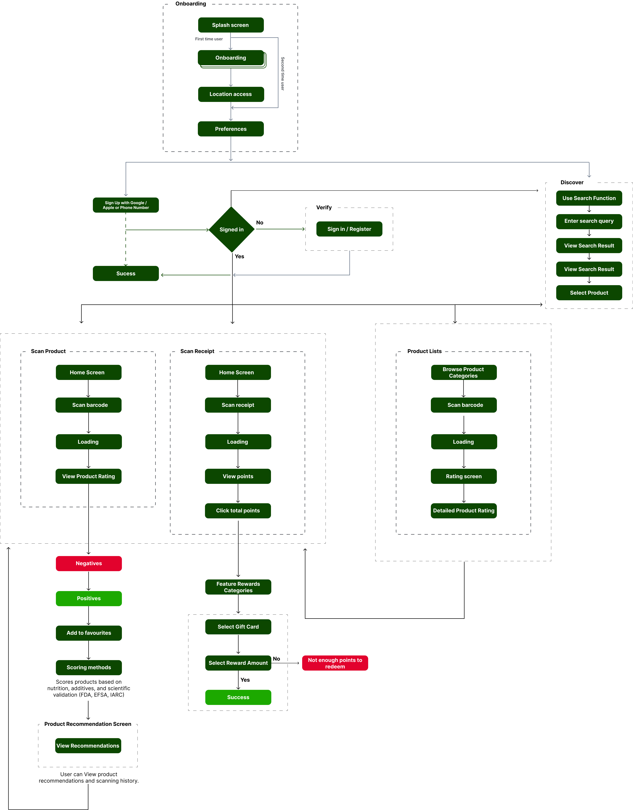

Discover
Surveys • Interviews • Competitive Scan
Loading awesome work... hang tight 🚀

Helping shoppers make smarter food choices with a quick barcode scan.
Product Design (UX/UI)
10 Weeks
Figma, FigJam, Google Forms, Zoom
Solo (peer testers)
Concept-to-prototype of a productivity app with AI-assisted scheduling and goals
This project is a fictitious scenario, completed as part of a graduate program.
Last year, I watched a friend try to switch to a gluten-free diet for health reasons. Every grocery run became a frustrating guessing game — scanning labels, Googling additives, and trying to interpret vague health claims. That experience sparked a question in my mind: Why isn’t there a faster, more personalized way to shop smarter?
"According to a 2023 report by the Food Marketing Institute, 65% of U.S. shoppers say they struggle to interpret food labels, and 72% want clearer ingredient information when buying groceries.
Ever stood in a grocery aisle, feeling overwhelmed by:
Our research revealed that 65% of shoppers struggle with food labels while 72% want clearer ingredient information. These insights shaped our design challenge:
"How might we transform complex food labels into instant, personalized health insights that help shoppers—especially those with dietary restrictions—make confident, informed decisions in seconds rather than minutes?"
This question guided every design decision, focusing on creating transparency, building trust through scientific backing, and delivering personalized recommendations that adapt to individual health needs and family sensitivities.
Adapting the Double Diamond for rapid, evidence-based health-tech design.
Surveys • Interviews • Competitive Scan

Affinity Map • Personas • Problem Statement

Wireframes • Prototypes • Usability Tests

Hi-Fi Designs • Launch Prep • Metrics
Using Discover → Define → Develop → Deliver keeps Orbit Scan grounded in real user pain points while propelling each iteration toward a launch-ready solution.
22 grocery shoppers (ages 19–52; 40 % dietary restrictions) recruited via Reddit nutrition forums and campus bulletin boards. Pre-screen ensured frequent label reading and smartphone use in-store.
Convenience sample; small n provides direction, not prediction. Example interview prompt: “Show me the moment a label confused you—what did you do next?”
Regulatory momentum – In 2024-25 the FDA refreshed the Nutrition Facts panel, enlarging calories, flagging Added Sugars, and proposing front-of-package warnings for high salt, sugar, and saturated-fat foods. These changes aim to cut label-reading time and improve shopper comprehension.
Color-cue proof – Meta-analyses of European “traffic-light” labels show a 6-7 % drop in calorie purchases and faster decision speed when green/yellow/ red nutrient cues are present, validating the power of at-a-glance visuals.
AI classification – NIH-funded teams are training models that score 50,000+ U.S. groceries by processing level, helping identify ultra-processed items linked to obesity and heart disease.
Implication for Orbit Scan: shoppers are primed for clearer visual cues, yet current labels still lack personalization. Combining FDA-compliant data, traffic-light visuals, and AI-powered dietary filters positions Orbit Scan to deliver instant, tailored guidance right at the shelf.
Multiple-choice questions (respondents could select more than one option).
Bars show share of respondents; totals exceed 100 % due to multi-select questions.
4 interviews → recurring pain points around trust, clarity & personalization.
Parents and young professionals balancing budgets, children, and dietary goals.
“Labels feel like a foreign language.”
“I spend ages googling E-numbers in the aisle.”
“An app that just says ‘safe’ or ‘avoid’ would save me.”
Zoom remote & in-store shadowing • 4 participants (2 with dietary restrictions)
We explored how shoppers interpret product information, what overwhelms them in-aisle, and where a scan-to-insight tool could simplify health decisions.
We benchmarked Orbit Scan against three popular label-scanning apps to uncover strengths we should keep and gaps we can close around transparency, personalization, and shopper trust.
Food + cosmetic scanner
A–F food grades
Crowd-sourced database
| Key Feature | Yuka | Fooducate | Open Food Facts |
|---|---|---|---|
| Personalized allergy filters | ✗ | Paywall | ✗ |
| Alternative product suggestions | ✓ | Partial | ✗ |
| Reward / loyalty system | ✗ | ✗ | ✗ |
| U.S. regulatory alignment (FDA) | Limited | Partial | ✓* (data only) |
✓ = fully supported • ✗ = missing • Partial = basic or paywalled
Graduate student · Part-time barista · Shares apartment with 2 roommates
Newly diagnosed with gluten sensitivity, Stephanie juggles classes, shifts, and a packed social life. Every grocery run becomes a mini research project of scanning labels or googling additives. “I just want a quick yes-or-no so I can get out of the aisle.”
Decision Drivers
| Health |
|
| Price |
|
| Convenience |
|
Typical Scenario: Wednesday 6 pm — on her way home from class, Stephanie pops into Trader Joe’s for a five-minute grab-and-go. She needs dinner ingredients and gluten-free snacks for an 8 pm study group.
Insight: Younger shoppers like Stephanie crave instant, trustworthy signals and personalized swap suggestions so they can stick to dietary rules without derailing tight schedules.
| Starting | Trying | Conflicting | Quitting |
|---|---|---|---|
|
Decides to shop healthy food “Hopeful and determined, but slightly anxious.” |
Reads labels, compares items “Motivated but increasingly confused by scientific terms.” |
Research time crunch, stress “Don’t have time to research every ingredient.” |
Grabs familiar brands, unsure “I’ll just stick with what I know. Disappointed.” |
Peaks mark rising stress moments.
Clustering 120 qualitative notes revealed three recurring pain-point clusters.
“I get overwhelmed—everything claims it’s healthy.”
“I compare products forever and still leave unsure.”
“I don’t trust ‘natural’ labels—what does it mean?”
“Nutrition panels are cluttered; hard to read in a hurry.”
“I’m only looking for low-sugar—but check each item manually.”
“Wish something knew I avoid gluten and suggested swaps.”
Key insight → Shoppers crave an instant, credible signal they can trust and a way to filter options to their personal health needs without scanning every label.
Gluten-sensitive shoppers need a fast, trustworthy way to confirm product safety and discover suitable alternatives in-aisle, because current labels and apps demand too much time and manual interpretation.
How might we turn complex food labels into instant, personalized go/ no-go signals—plus smart swap suggestions—so gluten-sensitive shoppers finish a grocery run 30 % faster yet feel 100 % confident?
Enters store
Grabs two similar cereals 😵 (overwhelm)
Squints at label, googles “malt extract” 😖
Opens generic scanner app (data incomplete)
Picks “safe-ish” option—still unsure
Checks out (26 min total)
😵 / 😖 = highest frustration spikes
Mapping the shortest path from “scan barcode” to “add healthier swap to cart.” Branches show optional deep-dives (ingredient details, rewards).

Built on an 8-pt grid, traffic-light palette and 16 dp corners for visual consistency.
I conducted moderated usability testing with 4 participants who matched my target users. Each session lasted 20–30 minutes and was based on a mid-fidelity black & white prototype. I asked them to complete tasks such as scanning a product, interpreting its health information, and exploring the rewards section. During usability testing, we found that users struggled to interpret ingredient safety and overall product health in the old design. The redesign introduced a color-coded scorebar, risk-level indicators, and a clearer hierarchy.
Tasks: ① scan a product → ② read the rating → ③ set food-preference filters. Three pain points emerged; fixes are highlighted below.
“I see 10 / 100… is that good or bad?”
• Added big 41 / 100 badge at top • Traffic-light bar shows safe → risky zones • Negatives / Positives split + risk tags (High, Limited) • Counts beside headers now bold for quick scan
“Why do I land on a blank camera screen first?”
• Rating now overlays the camera in <2 s (progressive disclosure) • Full details moved to swipe-up sheet • Users see pass/fail before lowering phone
“Too many switches, then I still have to hit Done.”
• Replaced list of toggles with icon chips (visual + label) • Multi-select in one tap; auto-save on close • Interaction steps reduced from 3 → 1

Old: Basic listing of ingredients under "Negatives" and "Positives" with simple counts and an overall 0-100 score. Users struggled to interpret what the numbers meant.

New: Prominent rating badge, traffic-light risk indicators, dietary badges (Lactose Free, Vegan), and color-coded score bar for instant comprehension.

Old: Camera opens, users scan, then wait 30 seconds for a separate screen to load with product details. Created frustrating delays.

New: Rating appears as an overlay on the scanner in under 2 seconds. Full details available via swipe-up sheet using progressive disclosure.

Old: Long list of toggle switches requiring users to flip each one individually, then press "Done" button. Felt tedious and slow.

New: Visual icon chips with familiar imagery enable multi-select in one tap. Auto-saves on close, reducing interaction steps from 3 to 1.
Based on usability findings, we established visual foundations that prioritize clarity, accessibility, and trust—key themes from our research phase.
Comprehensive green system with accessibility ratings, designed specifically for Orbit Scan's health-focused interface.
Green Strategy: Three green variations provide flexibility—Standard for primary actions, Lime for fresh/energetic states, and Emerald for premium/trusted elements. All combinations meet WCAG accessibility standards, reinforcing Orbit Scan's commitment to health and safety.
SF Pro typography specifications for iOS mobile devices only. These point sizes are optimized for iPhone screens and iOS accessibility guidelines.
Mobile Rule: SF Pro Display for 20pt+, SF Pro Text for 19pt and below. Sizes shown are for iPhone devices with standard resolution.
| iOS Text Style | Font Family | Size (pt) | Line Height | Weight | Mobile Usage |
|---|---|---|---|---|---|
| Large Title | SF Pro Display | 34pt | 41pt | Regular | App name, main titles |
| Title 1 | SF Pro Display | 28pt | 34pt | Regular | Screen titles |
| Title 2 | SF Pro Display | 22pt | 28pt | Regular | Section headers |
| Title 3 | SF Pro Display | 20pt | 25pt | Regular | Card titles |
| Headline | SF Pro Text | 17pt | 22pt | Semibold | Important content |
| Body | SF Pro Text | 17pt | 22pt | Regular | Main content text |
| Callout | SF Pro Text | 16pt | 21pt | Regular | Emphasized info |
| Subhead | SF Pro Text | 15pt | 20pt | Regular | Secondary text |
| Footnote | SF Pro Text | 13pt | 18pt | Regular | Labels, metadata |
| Caption 1 | SF Pro Text | 12pt | 16pt | Regular | Image captions |
| Caption 2 | SF Pro Text | 11pt | 13pt | Regular | Smallest text (min size) |
iOS Mobile Only: These sizes are for iPhone devices. 11pt is the minimum accessible size.
iOS Mobile Specification: These point sizes are exclusively for iPhone devices. SF Pro Display for 20pt+, SF Pro Text for 19pt and below. All sizes support Dynamic Type and meet iOS accessibility standards with 11pt minimum size requirement.
Here's the full scope of Orbit Scan— from onboarding → scanning → rating → rewards. This map guided every research question and design decision that follows.

Flow highlights: Onboarding → Camera scan → Health rating → Swap suggestions → Rewards system → Lists & preferences management.
Orbit Scan's onboarding introduces core functionalities across four screens, highlighting instant health insights, additive identification, and reward systems to encourage user engagement.

The Discover home screen presents users with personalized "Products you may like" alongside "E Gift Vouchers".
Features an "Articles" section offering informative content on healthy eating, packaging swaps, gut health, and clean bread options.
Displays detailed health information after scanning, highlighting both positive and negative ingredient attributes with clear visual indicators.
Offers "Add to Favorites", "Scoring method" details, and "Recommendations" for healthier alternatives.


Comprehensive ingredient analysis with detailed health impact information, risk assessments, and alternative recommendations.
Users can explore scoring methodology and access personalized suggestions based on their dietary preferences and restrictions.
Streamlined category browsing allows users to explore top food product categories like Milk, Coffee, Juices, and Chocolates with intuitive visual icons.
Organized structure supports faster product discovery and decision-making while maintaining a clean, user-friendly browsing experience.


Users explore featured rewards across categories like Retail, Health, and Fashion, motivating continued engagement with clear value propositions.
Clean, intuitive interface allows users to select reward amounts based on available points with transparent redemption process.
Experience the complete Orbit Scan user flow with working interactions. Click through the refined screens to see how usability testing insights shaped the final design.
💡 Tip: Try the complete scan-to-recommendation flow to see how we addressed usability testing feedback
Built to reduce in‑aisle decision time and second‑guessing by translating labels and claims into a single, explained signal.
Early prototype; small, convenience samples. Findings are directional and guide the next round of validation.
A single “good to go / be cautious” cue with a short reason helped participants act faster than scanning full labels and additive lists.
“Why this rating?” with plain‑language ingredient callouts and a source note reduced skepticism about scores and marketing claims.
Simple dietary/allergen preferences filtered out irrelevant warnings and surfaced what mattered for the shopper or family.
The job isn’t “teach nutrition”; it’s “help decide in under a minute.” Progressive disclosure (one signal → short reason → deeper details) aligned best with that job.
Copy, color reliance, and source transparency mattered more than interface flourishes. The next step is proving measurable time‑to‑decision gains in real stores.
Next: validate with larger, diverse samples and live product data.
Make one decision easy: show a single, honest signal, cite the reason in plain language, and tailor it to the shopper’s needs. Everything else is depth on demand.
Explore additional case studies and design work
I'm always open to discussing new opportunities, design challenges, and creative collaborations.

.png)